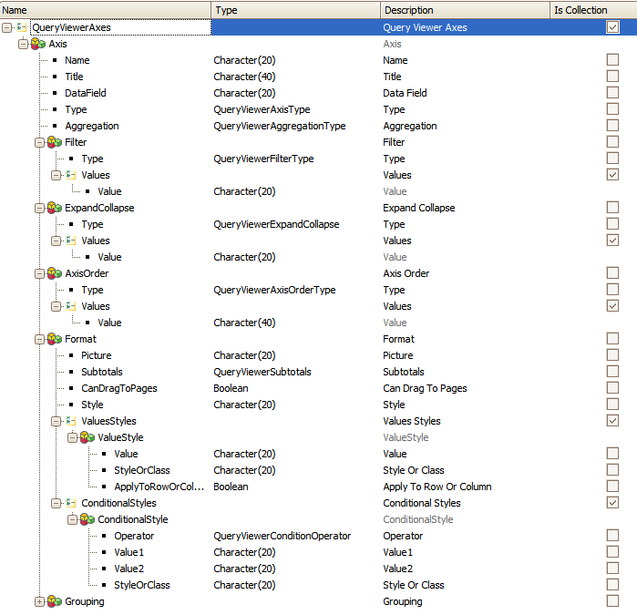

Axes Property (GeneXus 17)
|
We can use this property when we have to act programmatically on the elements of the chart axes. It contains the name of the variable based on the QueryViewerAxes SDT. Values
QueryViewerAxes SDT Structure
ExampleFor the following example, we will take the following query in the ClientsQuery object as a reference. The information displayed can often be lengthy when the elements that comprise it are expanded (default setting). This may be easily avoided by collapsing all the elements starting from the first one, or from another element close to the first one. Later on, the user will expand those nodes as needed. In the image below, the PivotTable is completely expanded.
The following code shows how to completely collapse all the elements.
Event Start
&Axis = New()
&Axis.Name = "ClientId"
&Axis.ExpandCollapse.Type = QueryViewerExpandCollapse.CollapseAllValues
&Axes.Add(&Axis)
EndEvent
Note that the element being collapsed –ClientId– is the first one in the query, and therefore it will be the first column in the query. The result would be as follows: If we needed to collapse from the ClientActive element, for example, we would select it instead of ClientId, as shown below: &Axis.Name = "ClientAdmissionDate” ... and the result would be as shown in the image below. Scope
|